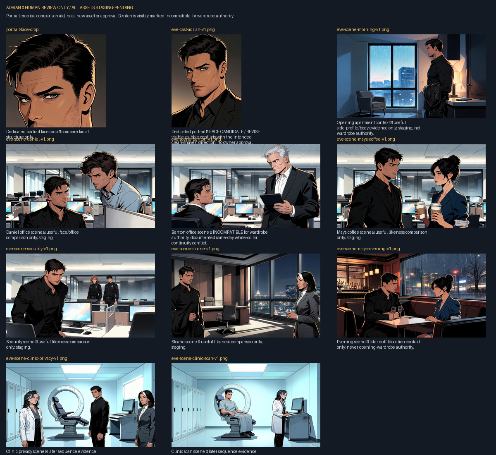

eve-cast-adrian-v1.png
Dedicated portrait — BOUNDED CANONICAL IDENTITY: stubble is excluded; opening Adrian is clean-shaven. No body or wardrobe authority.
The portrait is owner-approved only as a bounded canonical Adrian identity reference: face, approximate age/read, and core short dark hair. Its visible stubble is noncanonical; opening Adrian is clean-shaven. No body, wardrobe, shoe, pose, or production-scene authority is granted. The Benton scene remains incompatible with opening wardrobe authority because its white collar conflicts with the same-day direction.

eve-cast-adrian-v1.png
Dedicated portrait — BOUNDED CANONICAL IDENTITY: stubble is excluded; opening Adrian is clean-shaven. No body or wardrobe authority.

eve-scene-morning-v1.png
Opening apartment context — useful side-profile/body evidence only; staging, not wardrobe authority.

eve-scene-daniel-v1.png
Daniel office scene — useful face/office comparison only; staging.

eve-scene-benton-v1.png
Benton office scene — INCOMPATIBLE for wardrobe authority: documented same-day white-collar continuity conflict.

eve-scene-maya-coffee-v1.png
Maya coffee scene — useful likeness comparison only; staging.

eve-scene-security-v1.png
Security scene — useful likeness comparison only; staging.

eve-scene-sloane-v1.png
Sloane scene — useful likeness comparison only; staging.

eve-scene-maya-evening-v1.png
Evening scene — later outfit/location context only; never opening-wardrobe authority.

eve-scene-clinic-privacy-v1.png
Clinic privacy scene — later sequence evidence only; never opening wardrobe/mirror authority.

eve-scene-clinic-scan-v1.png
Clinic scan scene — later sequence evidence only; never opening wardrobe/mirror authority.